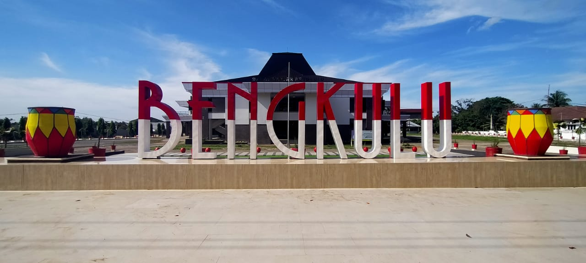
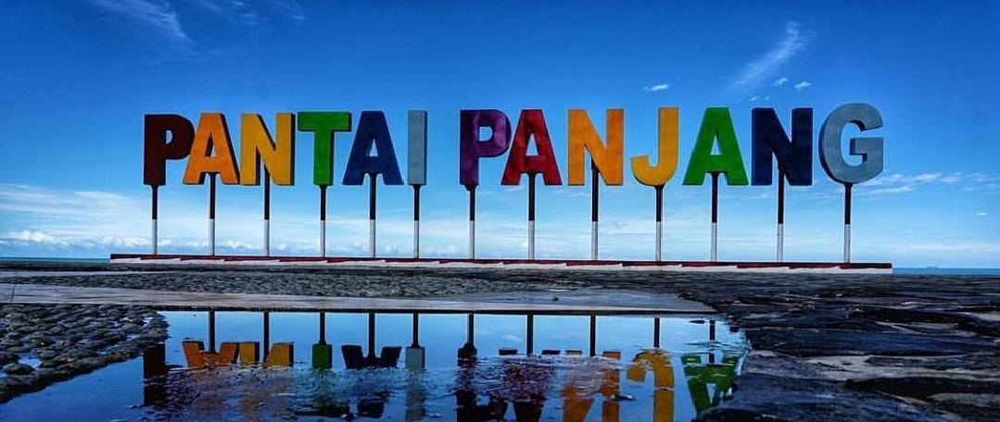
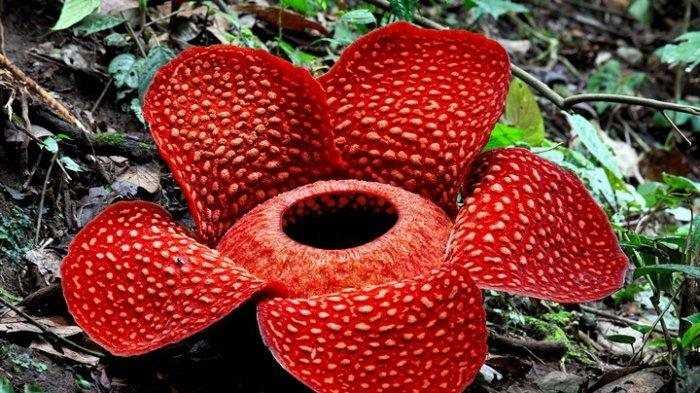
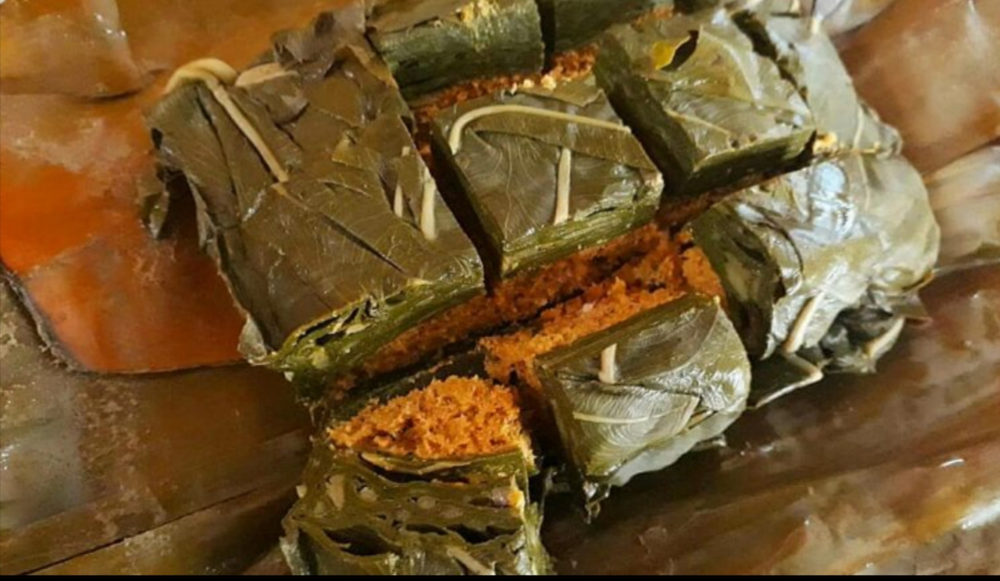

Wisata
Pantai Panjang merupakan pantai yang berada di Provinsi Bengkulu. Pantai ini memiliki garis pantai yang mencapai 7 km dan lebar pantai sekitar 500 meter. Pantai Panjang terletak di Kecamatan Ratu Agung, Kecamatan Teluk Segara, & Kecamatan Ratu Samban.
Pantai Panjang sering dimanfaatkan oleh wisatawan dan masyarakat sekitar. Di sana terdapat Sport Center sehingga masyarakat dapat melakukan kegiatan olahraga seperti voly pantai, berjalan, dan berselancar. Di pagi dan sore hari biasanya pantai akan dipenuhi oleh masyarakat yang melakukan jogging di pinggir pantai. Ombak di Pantai Panjang banyak dimanfaatkan oleh para pengunjung untuk berselancar. Pantai Panjang yang ada di Bengkulu ini mempunyai banyak fasilitas diantaranya terdapat restoran, cafe, penginapan, area bermain, pusat perbelanjaan, hingga fasilitas untuk olahraga.
Icon
Rafflesia arnoldii adalah spesies Rafflesia yang dapat tumbuh hingga setinggi 110 cm ketika mekar. Penamaannya diperoleh dari nama seorang dokter dan penjelajah pada abad ke-19 Masehi, Joseph Arnold. Ia melihat Rafflesia arnoldii pada tahun 1818 ketika melakukan penjelajah di sekitar sungai Manna dalam kawasan pedalaman Manna, Bengkulu Selatan.Rafflesia arnoldii menyebar di wilayah Indonesia, khususnya pulau Sumatra dan Kalimantan serta pulau-pulau di sekitarnya.
Rafflesia adalah sebuah genus tumbuhan berbunga yang semua spesiesnya hidup sebagai parasit. Anatomi tumbuhan pada Rafflesia tidak lengkap. Organ tubuh dari Rafflesia hanya berbentuk bunga yang mekar atau kuncup saja. Rafflesia tidak memiliki bagian daun, batang dan akar.
Makanan
Pendap merupakan salah satu makanan khas di Provinsi Bengkulu. Pendap atau biasa disebut ikan pais ini mampu bersaing dengan sejumlah kuliner lainnya. Makanan khas dari Bengkulu ini telah menembus pasaran sejumlah kota di Indonesia, seperti Jakarta, Lampung, Palembang, Pangkal Pinang dan Jambi. Pendap memiliki cita rasa yang khas yang dapat menggugah selera makan terutama aroma khas daun talas sebagai pembungkusnya. Hebatnya lagi, makanan yang memiliki cita rasa yang pedas dan gurih ini, juga telah sukses menembus pasar mancanegara, mulai dari Australia, Belgia, Jepang, dan negara lainnya.
Pendap sering kali menjadi makanan favorit para wisatawan dari dalam sumatera maupun luar sumatera. Pendap memiliki kesamaan dengan pepes ikan terutama cara pembuatannya, perbedaannya ialah bahan yang digunakan serta daun talas sebagai pembungkusnya dan diikat dengan tali rafia.